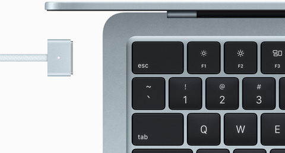

Design
Leve pelo caminho.

Super leve e com um pouco mais de um centímetro de espessura, o Macbook Air se encaixa facilmente na correria da sua rotina e na sua mochila. O meodelo M4 é feito com mais de 50% de materiais erciclados, e o alumínio da estrutura resistente também é reciclado
Tela de 13 Pol.
Tela de 15 Pol.



Nova cor. Tudo Azul São quatro cores divinas para você escolher. Uma delas é a novas azul-céu. E todos os modelos de Macbook Air vem com um cabo MagSafe